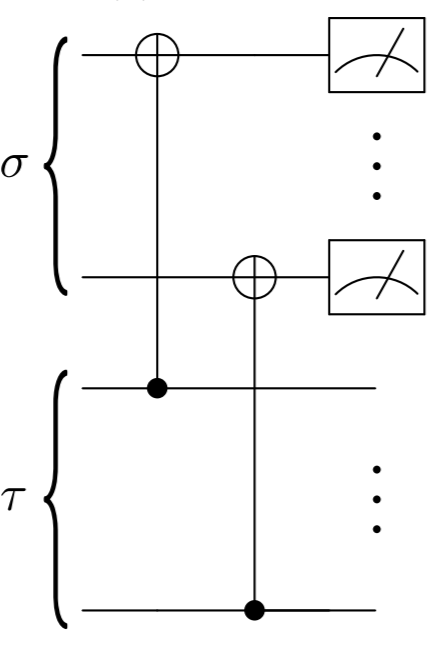
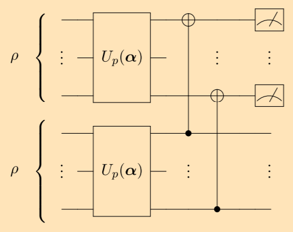
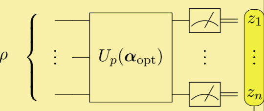

变分量子态对角化算法是量子-经典混合算法中的一员，可以看作是VQE算法的拓展。假设给定一个量子态，怎么找到它所有的特征值？按照量子力学的密度矩阵表示，每一个量子态都可以被表示为一个有非负特征值的埃尔米特矩阵，且这些特征值之和为1。变分量子态对角化 (VQSD) 就是一个可以帮助我们找到量子态所有特征值的算法。VQSD算法的核心思想很简单，首先建造一个参数化的电路 $U(\overrightarrow\theta)$，利用梯度下降算法进行参数优化。当参数优化到足够好时，输入初始态 $\rho$ 让这个电路运行，得到的输出态 $\rho' = U(\overrightarrow\theta)\rho U^\dagger(\overrightarrow\theta)$ 的非对角元元素就变成了（更准确地说是接近）$0$。
对角内积测量是变分量子态对角化中的重要组成部分，它其实就是一个用来计算 $\text{Tr}(Z(\sigma)Z(\tau))$ 的电路，其中函数 $Z$ 的作用是将一个矩阵的非对角元变为0,

图片来自于 [1]
正如图片所示，准备好两个量子态 $\sigma$ 和 $\tau$，然后加入一些 CNOT 门，测量目标量子比特 (在这幅图里也就是上半边的量子比特)，记录下测量得到的信息。重复以上步骤多次，计算出测量得到 $00\cdots0$ 的概率，这个概率便是 $\text{Tr}(Z(\sigma)Z(\tau))$ 的近似值。重复测量的次数越多，这个近似值就越精确。
接下来的一步是需要找到合适的参数使得 $\rho' = U(\overrightarrow\theta)\rho U^\dagger(\overrightarrow\theta)$ 成为一个（接近）对角化的量子态。

图片来自于[1]
上述的图片展示了我们应该怎么做。准备好两个一样的量子态 $\rho$， 作为初始态分别输入到两个一摸一样的参数化电路中。这两个参数化电路有一样的参数。将输出的两个量子态作用对角内积测量，计算得到 $00\cdots0$ 的频率，这个频率便是 $Tr(Z(\rho')Z(\rho'))$ 的近似值。 这个数值越大，$\rho'$ 就越接近对角矩阵。如果你想知道背后的原因，可以去参考 [1]。这就意味着我们要找到最优的参数 $\overrightarrow\theta_\text{optimal}$ 使得 $-Tr(Z(\rho')Z(\rho'))$ 最小化。注意到$-Tr(Z(\rho')Z(\rho'))$ 本身就是关于 $\overrightarrow\theta$ 一个多元函数，也就是说，我们可以利用梯度下降帮我们寻找答案。
经过一些列梯度下降优化，我们找到了 $\overrightarrow\theta_\text{optimal}$， 将 $\rho$ 作为输入态，运行量子电路 $U(\overrightarrow\theta_\text{optimal})$， 终于得到了一个（近似）对角态 $\rho'$。我们需要做什么才能从 $\rho'$ 那里得到它的对角元（也就是特征值）？当然是做很多次测量。

图片来自于 [1]
量子态在测量后会发生坍塌，所以我们需要准备很多份 $\rho'$，测量这些量子态并统计出结果。计算所得到结果的频率，而这些统计出来的频率，就是我们梦寐以求的特征值。很显然，经历过如此长的步骤，我怕你是早就忘了文章的前半部分，不过不要紧，接下来的代码实战会让你重新复习一遍。
首先我们装载相关的包。我们的例子模拟的是一个2-qubit的纯量子态，这个纯量子态是由一个提前定义好的电路生成的
import copy import numpy as np import sys sys.path.append('../../..') # "from QCompute import *" requires this from QCompute import *
设置好参数和超参数
shots = 100000 n = 2 # n-qubit delta = np.pi / 2 # calculate derivative learning_rate = 0.5 # learning rate N = 15 # number of parameters para = np.random.rand(N) * 2 * np.pi # initial parameters
def state_prepare(q, i): """ This function is used to prepare state """ RX(0.1)(q[i]) RZ(0.4)(q[i + 1]) CX(q[i], q[i + 1]) RY(0.8)(q[i]) RZ(1.2)(q[i]) def universal_cir(q, i, para): """ this function build a 15-parameterized circuit, which is enough to simulate any 2-qubit Unitaries """ RZ(para[0])(q[i]) RY(para[1])(q[i]) RZ(para[2])(q[i]) RZ(para[3])(q[i + 1]) RY(para[4])(q[i + 1]) RZ(para[5])(q[i + 1]) CX(q[i + 1], q[i]) RZ(para[6])(q[i]) RY(para[7])(q[i + 1]) CX(q[i], q[i + 1]) RY(para[8])(q[i + 1]) CX(q[i + 1], q[i]) RZ(para[9])(q[i]) RY(para[10])(q[i]) RZ(para[11])(q[i]) RZ(para[12])(q[i + 1]) RY(para[13])(q[i + 1]) RZ(para[14])(q[i + 1]) def my_cir(para): """ This function returns the measurement result """ env = QuantumEnvironment() env.backend(BackendName.LocalBaiduSim2) q = [env.Q[i] for i in range(2 * n)] # prepare a state for i in range(2): state_prepare(q, 2 * i) # add parameterized circuit for i in range(2): universal_cir(q, 2 * i, para) # DIP test for i in range(2): CX(q[i], q[i + n]) MeasureZ(q, range(2 * n)) taskResult = env.commit(shots, fetchMeasure=True) return taskResult['counts']
def data_processing(data_dic): """ This function returns the frequency of getting 00xx """ sum_0 = 0 for key, value in data_dic.items(): if int(list(key)[0]) + int(list(key)[1]) == 0: sum_0 += value return sum_0 / shots def loss_fun(para): """ This is the loss function """ return -data_processing(my_cir(para)) def diff_fun(f, para): """ It returns a updated parameter set, para is a np.array """ para_length = len(para) gradient = np.zeros(para_length) for i in range(para_length): para_copy_plus = copy.copy(para) para_copy_minus = copy.copy(para) para_copy_plus[i] += delta para_copy_minus[i] -= delta gradient[i] = (f(para_copy_plus) - f(para_copy_minus)) / 2 new_para = copy.copy(para) res = new_para - learning_rate * gradient return res
def main(): """ now we perform eigenvalues readout """ para_list = [para] loss_list = [] for i in range(30): para_list.append(diff_fun(loss_fun, para_list[i])) loss_list.append(loss_fun(para_list[i])) env = QuantumEnvironment() env.backend(BackendName.LocalBaiduSim2) q = [env.Q[i] for i in range(n)] state_prepare(q, 0) universal_cir(q, 0, para_list[-1]) MeasureZ(q, range(len(q))) taskResult = env.commit(shots, fetchMeasure=True) print(taskResult['counts']) if __name__ == '__main__': main()
其中一次运行的结果是
{'00': 99563, '01': 405, '10': 27, '11': 5}
如果变成频率就是 $0.995, 0.004, 0.0027, 0.0005$, 和理论上的特征值 $1,0,0,0$ 很接近！